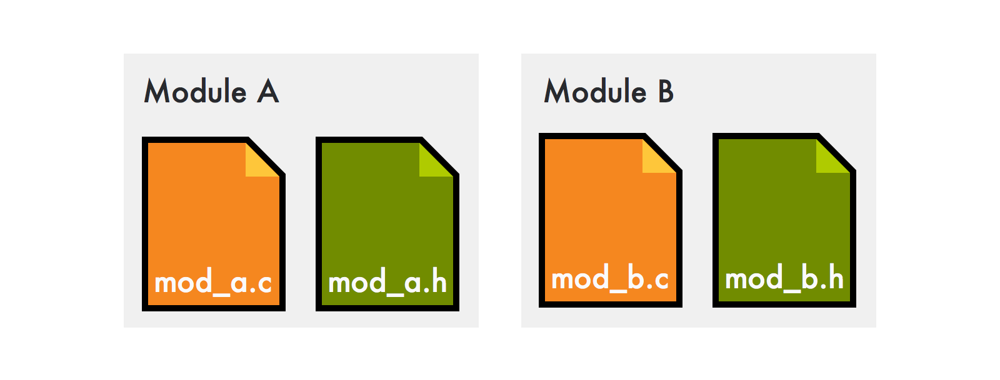
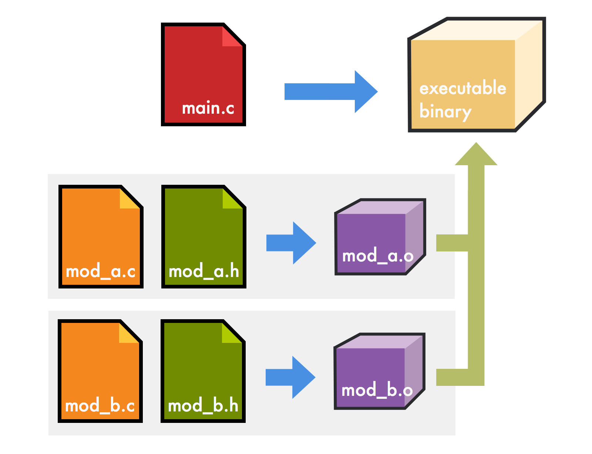
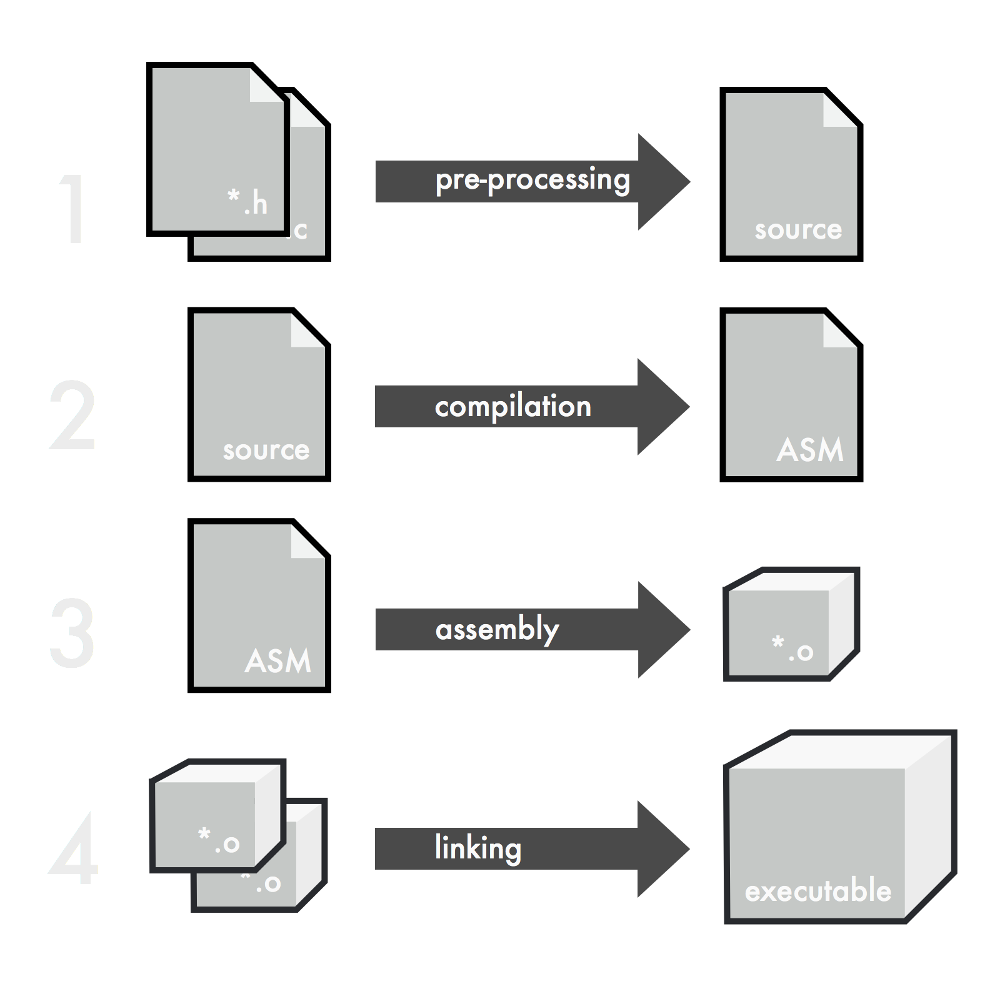
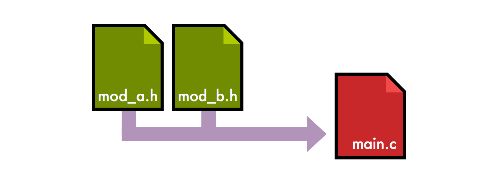

Thiết kế hướng Module trong C
C có lẽ là một ngôn ngữ không lạ đối với tất cả mọi người, nhất là các bạn sinh viên các năm đầu và các bạn học sinh cấp 3, vì đây là quãng thời gian chúng ta sử dụng C nhiều nhất -- để giải bài tập.
Tuy nhiên sẽ thế nào nếu chúng ta sử dụng C và áp dụng vào công việc thực tế? lưu ý ở đây mình nói về C chứ không phải C++ nhé. Cụ thể là phát triển các ứng dụng lớn bằng C? nghe có vẻ điên rồ quá không?
Có ai làm vậy không?
Câu trả lời là có. Rất nhiều là đằng khác. Để xem ai nào...
Đầu tiên phải kể đến đó là nhân hệ điều hành Linux và git, cả 2 sản phẩm quan trọng này đều được viết hoàn toàn bằng C bởi Linus Torvalds và đây là một C++ hater có tiếng.
Kế đến có thể nói đến curl, công cụ mà bất cứ ai xài hệ điều hành unix-like như các thể loại Linux hay macOS đều từng xài qua, cũng được viết chủ yếu bằng C.
Trong thế giới của các web developer, có thể kể đến redis, nginx, openssl đều được viết bằng C.
Chưa hết, ngoài ra còn có libuv, bộ thư viện đứng đằng sau sự thành công của cơ chế Async I/O tạo nên tên tuổi của NodeJS (tất nhiên chỉ là trong giới frontend dev thôi =)))) cũng được xây dựng bằng C nốt.
Ồ, còn nữa, ngay cả ngôn ngữ ruby vốn đã quá nổi tiếng không cần nói thêm nữa, cũng được Matz xây dựng bằng C luôn đấy.
Phèo, kể nhiều mỏi tay quá, viết đến đây tự dưng cảm thấy gần như toàn bộ thế giới đã được xây dựng bằng C rồi, tại sao mình lại lang thang đi code Swift với Java làm gì nhỉ 🐔
OK, vậy giờ vô chủ đề chính đi...
Bây giờ chúng ta sẽ cùng tìm hiểu làm thế nào để viết được các ứng dụng lớn như những ví dụ đã nêu ở trên, chỉ bằng cách sử dụng một ngôn ngữ không hề có những chức năng gì tiêu biểu như là class, hay template,... như C.
Thông thường, khi viết một chương trình C thì chúng ta sẽ thực hiện như mô hình sau:
Chương trình được viết tại file main.c và sau khi biên dịch, chúng ta có một file binary có thể chạy được, định dạng file này như thế nào là tùy vào hệ điều hành đích mà chúng ta chỉ định để biên dịch.
Chương trình càng lớn, file main.c càng to, thời gian biên dịch càng chậm, đó là lý do tại sao chúng ta nên phân tách ra thành từng module nhỏ, thao tác này gọi là Modularity.
Modularity là gì?
Modularity là phương pháp tổ chức một chương trình lớn thành nhiều phần nhỏ hơn, gọi là từng module. Mỗi module sẽ gồm một file header (*.h) chứa các định nghĩa, khai báo biến, prototype, các kiểu,... và một file implementation (*.c) để hiện thực hóa các prototype trong header, mục đích chính là để giấu đi phần code thực sự của nó và giấu luôn các thuộc tính private của từng module.

Ở phần sau chúng ta sẽ nói rõ hơn về cách tổ chức bên trong một module.
Sơ đồ bên dưới cho chúng ta thấy cách tổ chức của một project sử dụng nhiều module:

Trong sơ đồ này, chúng ta có 2 module mod_a và mod_b được khai báo bằng các file .h và .c tương ứng. Khi biên dịch, các module này sẽ được trình biên dịch build thành các file mod_a.o và mod_b.o
Mũi tên màu xanh nước biển chỉ quá trình biên dịch, mũi tên màu xanh lục chỉ quá trình Linking.
Hỏi: Một chương trình C được biên dịch như thế nào?
Đáp: Một chương trình C được biên dịch thông qua 4 bước: Pre-processing, Compilation, Assembly và Linking
 Bước pre-processing có nhiệm vụ ghép nối toàn bộ các file header được include, các macro,... thành một bộ source thống nhất và chuyển qua bước compilation, bước này, trình biên dịch sẽ "dịch" file source, chuyển nó thành mã máy (assembler code), bước assembly nhận chương trình assembler từ bước 2, build thành từng file object (*.o), các file object này sẽ được chuyển qua linker (một công cụ giúp kết nối các file object) và tạo thành một file thực thi duy nhất để chạy.
Lợi ích của Modularity là gì?
Việc phân chia chương trình ra thành nhiều module có rất nhiều ưu điểm, đặc biệt là đối với những ứng dụng lớn và phức tạp:
- Các module có thể được sử dụng lại trong nhiều project khác
- Nếu phần implementation của module có thay đổi, mà không làm thay đổi interface nó cung cấp thì không cần thiết phải compile lại toàn bộ chương trình (chỉ compile module đó thôi)
- Compile lại nhanh hơn (như đã nói ở trên)
- Self-documenting - Chỉ cần nhìn vào file header thì sẽ biết được cách dùng và các chức năng mà module cung cấp
- Dễ debug. Vì tách biệt và hoạt động độc lập nên mỗi module có thể được test riêng biệt, debug riêng biệt.
- Một số trình biên dịch C hiện đại có thể generate code nhanh hơn và tối ưu tốt hơn khi chúng ta modularity.
Modularity như thế nào?
Modularity tức là chúng ta chia source code thành nhiều file module, mỗi module gồm một file source (.c) và header (.h).
File header sẽ chứa mọi thành phần public của module, như là các hằng số, thuộc tính, các hàm chúng ta muốn sử dụng (chỉ khai báo ở dạng prototype), tuyệt đối không implement bên trong file header.

Các thành phần khác như implementation, các thành phần private sẽ được đưa vào source file (.c), vì khi thiết kế theo module, các chương trình/module cần sử dụng module đang xét không cần thiết phải biết phần logic bên dưới của module này làm gì.
Header file có gì?
Bước đầu tiên khi thiết kế một module đó là tổ chức file Header của module đó.
File header ngoài mục đích định nghĩa các thành phần cần thiết cho quá trình pre-processing, nó còn có tác dụng làm công cụ tham chiếu cho các lập trình viên khác khi sử dụng module của bạn.
Cấu trúc một file header thường có các phần sau:
Copyright
Phần này không nhất thiết phải có, nhưng nếu làm các dự án open source thì bạn nên bổ sung các thông tin này, để tránh việc nhập nhằng về quyền sở hữu cũng như việc sử dụng cho các project khác:
/*
mod_a.h -- Example of a C module
Copyright 2016 by Huy Tran
License: MIT
Author: Huy Tran <huy@gamarist.com>
Version: 2016-11-16
*/
Các thông tin gồm có: Tên module, chú thích cho module, copyright, tên loại giấy phép (rất quan trọng), tên tác giả, version,...
Có nhiều người còn đưa hẳn nội dung giấy phép sử dụng vào phần header này luôn, tuy nhiên theo mình việc này không cần thiết lắm, vì tên giấy phép là đủ rồi.
Chống double include
Phần tiếp theo, khá là quan trọng, đó là define module flag để đánh dấu cho C pre-processor biết rằng module đã được xử lý, tránh việc include nhiều lần cùng một file.
#ifndef _MODA_H_
#define _MODA_H_
// Body here
#endif
Khối lệnh trên dùng lệnh #ifndef để kiểm tra xem flag _MODA_H_ đã tồn tại hay chưa, ban đầu thì chưa.
Nếu chưa tồn tại thì sẽ define flag này bằng lệnh #define, và kết thúc với lệnh #endif.
Sau khi pre-processor xử lý xong file header này, thì flag _MODA_H_ cũng đã được tạo xong, nếu lần sau có một module nào đó tình cờ include lại file header này, hoặc bạn vô tình include 2 lần liên tiếp ở nhiều nơi, thì cũng sẽ không bị lỗi khi xử lý.
Khai báo macro, hằng số
Tiếp theo, chúng ta dùng lệnh #define để khai báo các macro cần dùng cho chương trình, ở đây thì tùy module cần gì và define cho hợp lý.
Ví dụ:
/* mod_a.h -- Constants declarations */
#define MODA_HEX_RED 0xff0000
#define MODA_HEX_GREEN 0x00ff00
#define MODA_HEX_BLUE 0x0000ff
#define MODA_KEY_A 65
Lưu ý là các macro, hằng số được khai báo trong file header sẽ là public và tồn tại trong toàn bộ chương trình sử dụng nó, vì thế nên tránh đặt những tên macro dễ gây nhặp nhằng, chồng chéo với các module khác.
Cách tốt nhất là đặt tên theo dạng <Tên Module>_<Macro>.
Khai báo kiểu
Phần này chúng ta khai báo các kiểu dữ liệu, struct, enum cần dùng cho module.
/* mod_a.h -- Types declarations */
enum moda_direction {
MODA_NORTH,
MODA_EAST,
MODA_SOUTH,
MODA_WEST
};
typedef struct _moda_point {
int x;
int y;
} moda_point;
Cách đặt tên cũng tương tự như ở trên.
Function prototype
Đây là phần quan trọng nhất trong một module header, tại đây chúng ta khai báo toàn bộ prototype của các phương thức/hàm cần dùng bên trong module. Các lập trình viên khác có thể dựa vào file này để sử dụng module của bạn mà không cần phải viết tài liệu chi tiết.
/* mod_a.h -- Function prototypes */
void moda_init(void);
int moda_add(int a);
Source file có gì?
Source file (ví dụ: mod_a.c) sẽ là phần implementation cho toàn bộ các prototype function đã khai báo ở header. Tất nhiên là bạn phải include header file trước:
#include "mod_a.h"
Ở trong này bạn cũng cần khai báo giá trị cho tất cả các biến đã khai báo ở header (nếu có).
Các macro, hằng số, kiểu dữ liệu được định nghĩa bên trong source file sẽ không được export khi biên dịch, vì thế chúng luôn là private.
Các biến số khai báo trong này vẫn sẽ là public trừ khi bạn thêm vào từ khóa static cho nó ở phía trước:
static int _a = 1;
Tương tự với các hàm, bạn cũng sẽ cần từ khóa static, nếu không nó vẫn sẽ được export và các module khác có thể sử dụng, cho dù bạn không khai báo trong prototype:
static void mod_a_private_func(int a, int b) {
...
}
Lưu ý: Ở đây có sự nhập nhằng trong cách dùng từ khóa static
Trong C, nếu ta dùng từ khóa static bên trong một scope nào đó khi khai báo một biến, thì ra khỏi scope đó, biến này vẫn tồn tại, vì khi đó nó được cấp phát tĩnh trong bộ nhớ, ví dụ:
void static_test() {
int a = 0;
static int b = 0;
b++;
printf("%d -- %d\n", a, b);
}
static_test();
static_test();
static_test();
Output sẽ là:
0 -- 1
0 -- 2
0 -- 3
Nhưng nếu dùng nó ở phạm vi toàn cục (không thuộc scope nào) thì trình biên dịch sẽ nhận biết đó là một biến/hàm public.